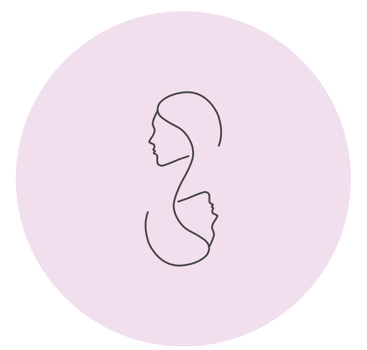
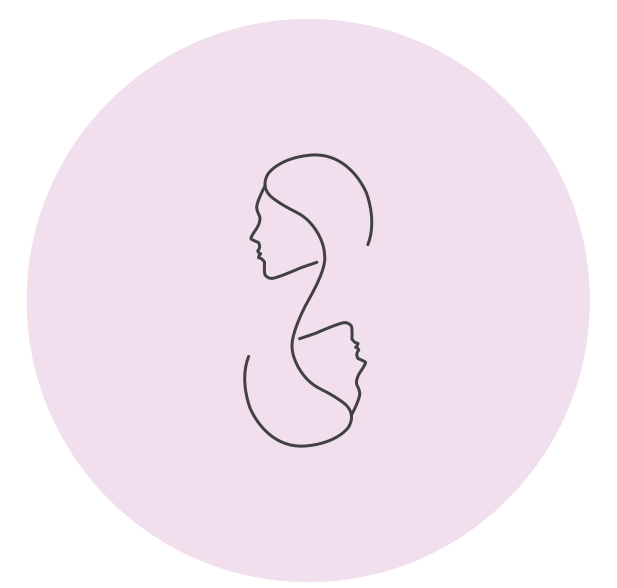
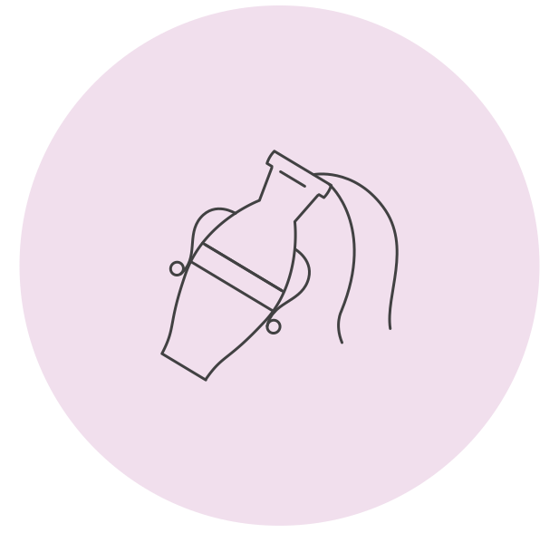
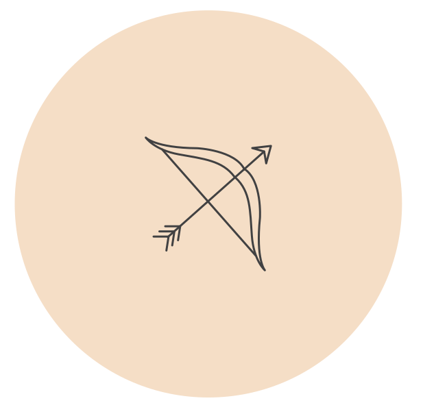
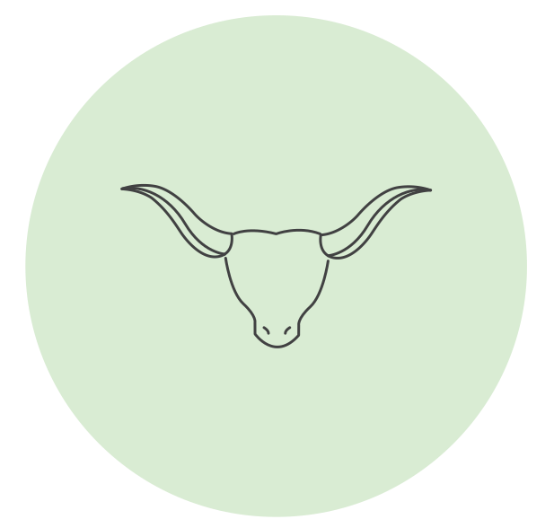
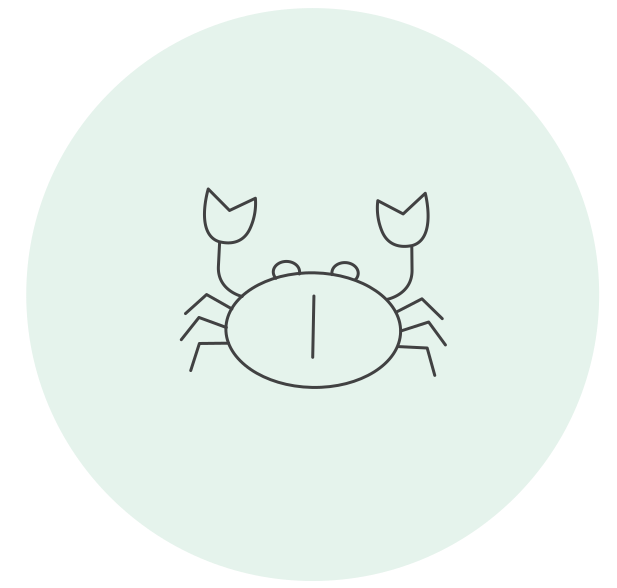
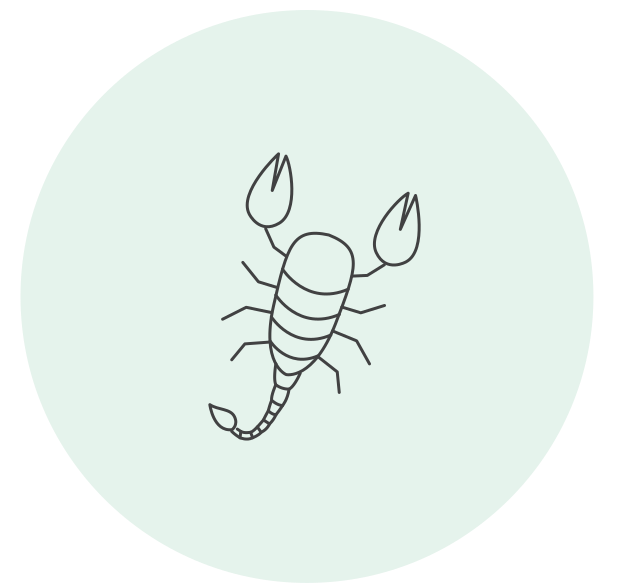
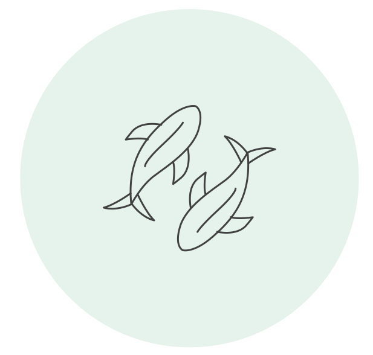
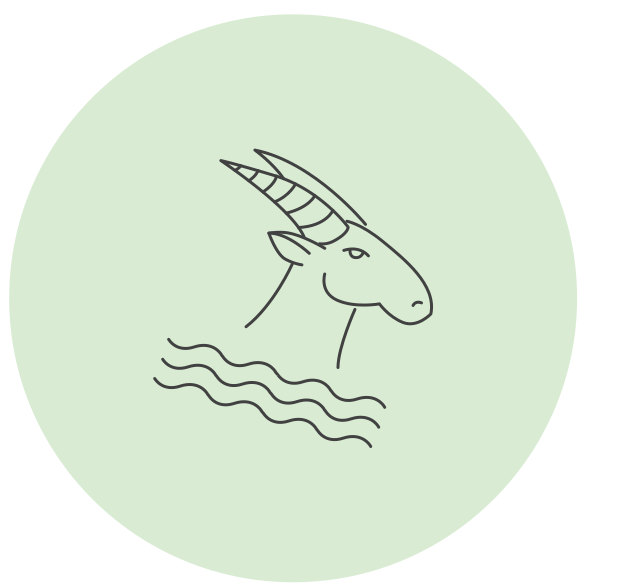

အလိုက်ဖက်ဆုံးရာသီခွင်တွဲဖက်များ
Zodiac signsတွေကို Fire signs,Air signs,Earth signsနဲ့ Water signsဆိုပြီးတော့ခွဲထားပါတယ်။
လေနှင့်မီးနဲ့တွေ့တဲ့အခါ မီးတောက်လေးကပိုတောက်လာပါတယ်
Fire signsတွေဖြစ်တဲ့ (Aries, Leo, and Sagittarius)တို့ရဲ့အကောင်းဆုံးတွဲဖက်တွေကတော့ သူတို့နဲ့အတူFire signsတွေအပြင်Air signsတွေဖြစ်တဲ့ (Gemini, Libra, and Aquarius) တို့ဘဲဖြစ်ပါတယ်။ အဲ့တာဆို မီးနဲ့လေ တွေဘယ်လောက်ရာခိုင်နှုန်းထိ တွဲဖက်ညီလဲဆိုတာကို အောက်မှာဖော်ပြပေးထားပါတယ်💌
 

Aries & Gemini

Aries & Libra

Aries & Aquarius

Leo & Gemini
Leo & Libra
Leo & Aquarius

Sagittarius & Gemini
Sagittarius & Libra
Sagittarius & Aquarius
မြေနဲ့ရေပေါင်းတော့ ရွှံ့လိုနူးညံ့သွားပါလိမ့်မယ်
Earth signs (Taurus, Virgo, andCapricon) တွေအတွက်အဆင်ပြေနားလည်မှုရှိတဲ့အကောင်းဆုံးရာသီခွင်တွေက Earth signsတွေအပြင်Water signsတွေဖြစ်တဲ့ Cancer, Scorpio, and Piscesတို့ဘဲဖြစ်ပါတယ်။


Taurus & Cancer

Taurus & Scorpio

Taurus & Pisces
Virgo & Cancer
Virgo & Scorpio
Virgo & Pisces
